✦ Precision in Every Process
Advanced CNC & Manufacturing Specialist Multi-Axis Machining & Mill-Turn Operations
Precision machining, CNC programming, tooling strategy, and process control for complex manufacturing environments. Supports teams in turning engineering drawings into reliable production output with speed, quality, and consistency.
📍 Alexandria, Egypt
🌐 LinkedIn
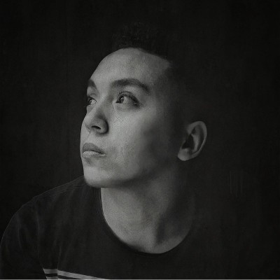
Muhammad Ahmed Kamal
Advanced CNC & Manufacturing Specialist
4+
Years of hands-on experience
14,500+
Hours of hands-on work
300+
Components machined
5+
CNC control systems
DMG MORI
Current focus: mill-turn machining
About Me
CNC expertise built through hands-on production experience.
CNC machining specialist with practical experience in turning, milling, mill-turn operations, and multi-axis machining. Professional experience includes CNC programming, machine setup, tooling selection, process planning, troubleshooting, and quality-focused execution.
Successful manufacturing depends on the relationship between material behavior, machine capability, cutting conditions, tooling, and geometry control. These factors form the foundation of an effective machining approach.
Expertise
Technical expertise across advanced machining and manufacturing operations.
⚙️
CNC Turning
Precision-focused machining backed by strong process knowledge and disciplined setup practices.
🖥️
CNC Milling
Precision machining focused on performance, process stability, and consistent quality.
🛠️
Mill-Turn
Managing complex workholding and multi-operation cycles for demanding components.
🔄
Multi-Axis
Developing advanced strategies for efficient machining of complex geometries.
Machines & CNC Control Systems
DMG MORI CLX 450 TC
Technical Toolkit
Software & Technical Tools
CAD, CAM, and CNC programming tools used for engineering design, machining strategy, simulation, and manufacturing.
01 Advanced Proficiency
SolidCAM
AdvancedSolidWorks
AdvancedCIMCO
Advanced02 Intermediate Proficiency
PowerMill
IntermediateCAMWorks
IntermediateESPRIT EDGE
Intermediate03 Working Knowledge
Autodesk Fusion 360
Working knowledgeAutoCAD
Working knowledgeHSMWorks
Working knowledgeArtCAM
Working knowledge04 Design & Productivity Tools
Adobe Illustrator
Microsoft Office
05 CNC Programming & Control Systems

Siemens SINUMERIK
Control systemFanuc
Control systemMitsubishi
Control systemGSK
Control systemMach3
Programming environmentRD6442
Control systemDSP A11
Control systemProgramming: Practical familiarity with G-code and M-code programming.
Services
Focused support for reliable processes and high-precision production.
01
CNC Programming
Creating efficient, safe, production-ready CNC programs for turning and milling operations.
- G-code / M-code editing
- Program optimization
- Process validation
02
Machine Setup & Execution
Guidance on toolpaths, workholding, offsets, and machine readiness to help ensure quality and efficiency.
- Workholding planning
- Tooling strategy
- First-piece verification
03
Process Improvement
Identifying bottlenecks, reducing scrap risk, and improving productivity in demanding production environments.
- Technical troubleshooting
- Cutting condition analysis
- Quality-driven refinement
Learning & Credentials
Certifications & Professional Development
Ongoing development of technical knowledge and practical skills in CNC machining, manufacturing technology, CAD/CAM, materials science, and related fields.
01 CNC Machining & Cutting Technology
Course completion
Turning
ISCAR E-Learning
Completed November 6, 2026
Course completion
Metal Cutting Technology E-learning
Sandvik Coromant Academy
Completed March 23, 2026
72-hour course completion
C.N.C Turning — Computerized Numerical Control
Instituto Don Bosco
Completed July 2025
02 CAD/CAM & Digital Manufacturing
Course completion
CAM Multi-Axis
Autodesk
Completed October 23, 2026
Course completion
Mechanical Design with Intent
Autodesk
Completed October 23, 2026
Course completion
Digital Manufacturing & Design
University at Buffalo
Completed July 5, 2026
03 Materials Science & Manufacturing
Course completion
Materials Science for Technological Application
Arizona State University
Completed July 2026
Course completion
Manufacturing Processes Selection
Udemy
Completed December 27, 2024
04 Quality & Professional Development
Course completion certificate
Lean Six Sigma White Belt
Council for Six Sigma Certification (CSSC)
Completed June 12, 2026
Course completion
The Human Rights Council and Its Mechanisms
United Nations OHCHR
Completed September 18, 2026
Featured work
Machining projects that combine geometry, tooling, and execution.
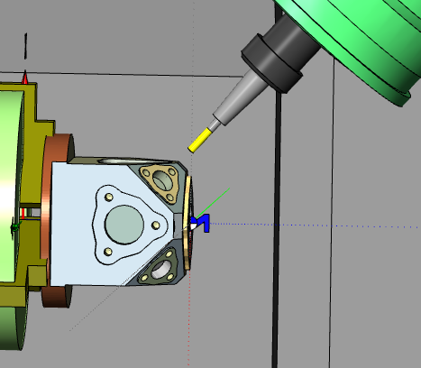
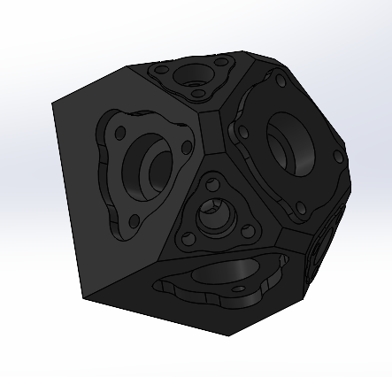
B-Axis CNC Machining
B-Axis Multi-Face Machining Component
This complex multi-face component was developed for B-axis CNC machining. It features multiple angular faces, precision bores, and bolt-hole patterns machined in different orientations. The project demonstrates advanced multi-axis strategies, accurate positioning, and the machining of complex geometries.
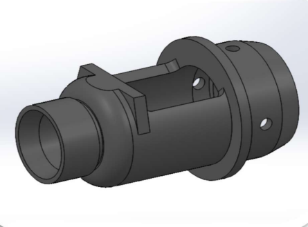
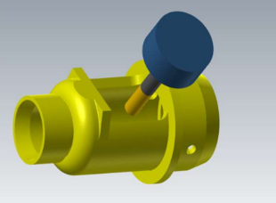
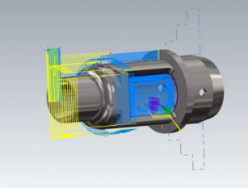
Multi-Axis CNC Machining
CNC Flanged Shaft Housing
This precision-designed flanged shaft housing is intended for rotary mechanical assemblies. It is machined using multi-axis CNC and includes internal and external features for alignment and secure mounting.
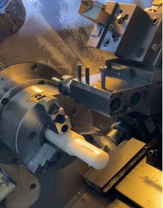
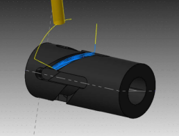
4-Axis CNC Turning (C-Y)
Bearing Cam
This precision-engineered cylindrical cam features a central bore and complex external cam profiles. It was developed using 4-axis CNC turning (C-Y) to machine contoured features around the cylindrical surface. Designed and programmed using SolidWorks and Mastercam, the project demonstrates advanced multi-axis machining capabilities.
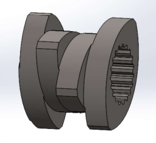
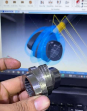
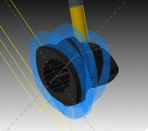
4-Axis Turning & Wire EDM
Grooved Motion Cam
This precision motion cam was manufactured using 4-axis CNC turning (C-Y), combined with internal wire EDM to produce high-accuracy spline geometry. It converts rotary motion into controlled linear movement, with tight dimensional tolerances and an optimized surface finish.
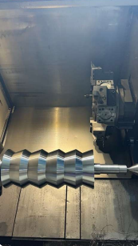
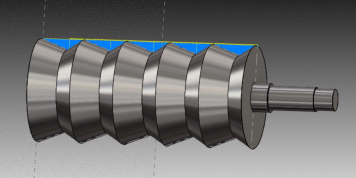
2-Axis CNC Turning
Screed Roller
Heavy-duty roller shaft machined using 2-axis CNC turning. The part includes multiple stepped and tapered profiles requiring precise toolpath control and stable machining conditions. Special attention was paid to dimensional accuracy and surface finish because of the component’s size and weight.
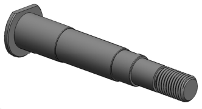
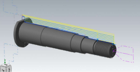
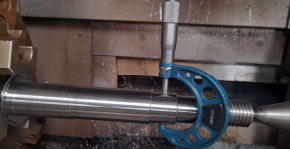
Precision CNC Turning
Core Shaft
This precision-turned core shaft is used in mold assemblies. It features stepped diameters, a threaded end, and a flange for secure mounting. Its geometry supports proper alignment and assembly, and its toolpaths are optimized for surface quality and dimensional accuracy.
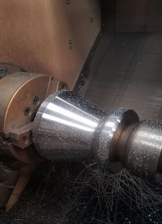
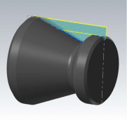
CNC Turning
Conical Roller
Precision-machined tapered roller used in molten steel drawing applications. Designed to withstand high temperatures and continuous pulling forces in metal extrusion lines. Machined with multi-pass turning strategy and optimized surface finish for smooth wire pulling.


Process
From engineering drawing to final quality assurance.
1
Interpret engineering drawings and review critical features.
2
Develop machining strategies, select tooling, and plan setups.
3
Program, simulate, and verify CAM operations before machining.
4
Set up the machine, run production, and inspect finished parts.
Professional Experience
Experience in CNC machining, CAD/CAM programming, production supervision, and precision manufacturing.
Precision CNC Machinist / Multi-Axis Specialist
Confidential Advanced CNC Manufacturing Company
April 2026 – Present
- Perform CNC turning, milling, machine setup, and program development.
- Work on precision components for the oil and gas industry.
Head of CNC Turning Section
El Badr Industries
July 2025 – April 2026
- Led CNC turning section activities and production operations.
- Coordinated machining workflows and technical problem-solving.
CNC Supervisor
EFCO
February 2025 – July 2025
- Supervised CNC operations and production activities.
- Monitored machine performance and workflow execution.
Administrative CNC Operations Supervisor
N&P Agency
January 2024 – May 2025
- Coordinated CNC operations and production follow-up.
- Managed operational reporting and workflow support.
Remote CNC Programmer
Paragon Innovations
May 2024 – August 2024
- Provided remote CNC programming support.
- Prepared CAD/CAM machining programs.
CNC Operator & Programmer
Egypt for Engineering Industries
March 2023 – December 2023
- Operated and programmed CNC machines.
- Worked with turning, milling, and laser operations.
CNC Operator
Al Nasr Engineering
January 2023 – March 2023
- Performed CNC machine operation and machining tasks.
- Supported production and basic machine setup.
Professional values
✓Technical problem-solving
✓Process stability
✓Tooling awareness
✓Precision and quality mindset
✓Continuous learning and improvement